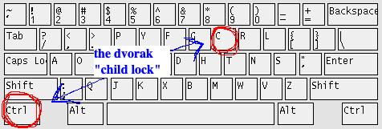

| Home | James Smile, M.Sc.I.T. | |||||||||||||||||||||||
|
|||||||||||||||||||||||
|
DILFS -- "Dvorak Imposes Limits For Safety"
Many who have found the CLITT recently can quickly become frustrated. You didn't know what you were missing, and there's a steep learning curve. It's enough to make your kernel crash, but don't panic. The CLITT teaches that a little dexterity and patience is all you need to gain those "Big O" benefits. Even the older CLITT-finders (as well as CLITT-founders) get occasionally flustered by the Dvorak landscape. Why is it impossible for me to use public computers now? How come the copy/paste commands are so darn hard to type on the Dvorak layout? These are questions that plague even the staunchest Dvorakians. The answer is to remember our guiding principle: DILFS — Dvorak Imposes Limits For Safety. There is a reason Dvorak is the safest keyboard layout, and it's not just because QWERTY is so abominable. It's because Dvorak has child locks (which should be activated on every automobile regardless of occupant age). For example, the fact that the Ctrl and C keys MUST be typed with two hands is really a security benefit. Just think about all the absent-minded copy/pastes that can be avoided with Dvorak. These simple cyber-mistakes made with the common QWERTY or even Colemak layouts lead to over 50% of today's cybercrimes.

Further, once you go Dvorak, you can't go back! (Some CLITT-finders are bilingual —versed in Dvorak while retaining knowledge of QWERTY— but this is discouraged). Forgetting QWERTY stops you from using most public computers, which you shouldn't be using anyways! If you think about it, switching to Dvorak might be the most societally-important thing you do. | ||||||||||||||||||||||